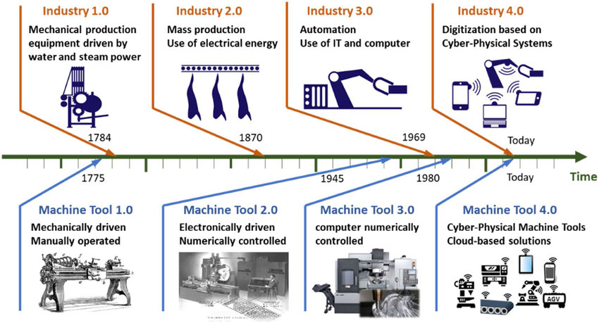
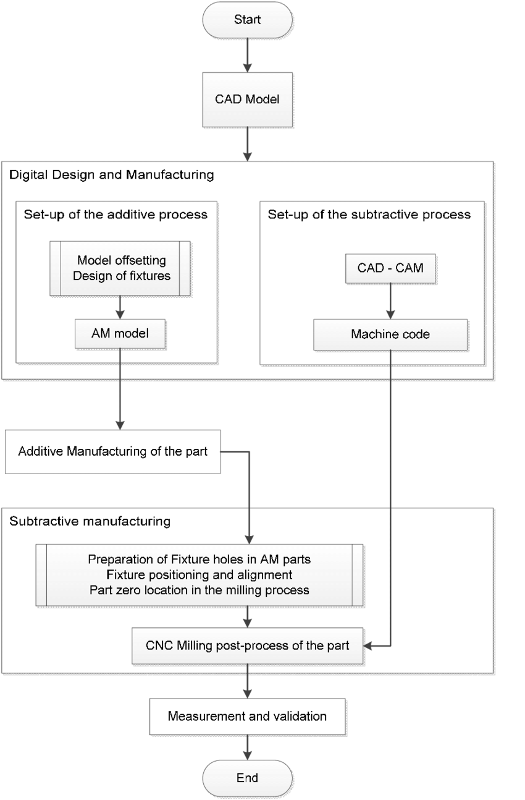

Precision tools are fundamental to modern manufacturing, enabling the creation of intricate and high-quality components with exceptional accuracy. These tools are indispensable in industries like aerospace, automotive, healthcare, and electronics, where even minor deviations can lead to critical failures. The demand for greater precision, reliability, and efficiency has driven continuous innovation, shaping the landscape of precision tool development. This article explores the history, technologies, applications, challenges, and prospects of precision tools, highlighting their transformative impact on manufacturing.
The Evolution of Precision Tools
The journey of precision tools began with simple, manual instruments designed for artisans. Tools like callipers and gauges were foundational to early manufacturing but offered limited precision. The Industrial Revolution introduced mechanised tools that enabled mass production, although the precision was still suboptimal.
A significant leap occurred with the advent of Computer Numerical Control (CNC) systems in the mid-20th century. These systems, integrated with Computer-Aided Design (CAD) and Computer-Aided Manufacturing (CAM), automated machining processes and achieved unprecedented levels of precision. Modern CNC tools run with tolerances as tight as ±1 micron, essential for industries like aerospace and medical device manufacturing (Groover, 2019).
Recent advancements in digital technology, materials science, and sensor integration have further refined precision tools, elevating their accuracy and functionality.

Figure 1: Historical Timeline of Precision Tools
Techniques and Innovations in Precision Tool Development
The evolution of precision tools relies on advanced materials, cutting-edge techniques, and innovative systems that enhance performance and reliability.
Advanced Materials: Materials like tungsten carbide, ceramics, and polycrystalline diamond (PCD) are integral to high-performance precision tools. These materials show exceptional hardness and wear resistance, ensuring durability under extreme conditions. Coatings like Physical Vapor Deposition (PVD) and Chemical Vapor Deposition (CVD) reduce friction and prolong tool life (Kalpakjian & Schmid, 2020).
Microfabrication Techniques: Techniques such as laser machining, lithography, and electrochemical machining enable the development of precision tools for micro- and nanoscale manufacturing. These are particularly important in electronics, where miniaturised components are frequently used.
IoT-Enabled Smart Tools: The integration of sensors and the Internet of Things (IoT) has led to "smart" precision tools. These tools monitor parameters like temperature, vibration, and wear in real-time, helping predictive maintenance and enhancing productivity (Xu et al., 2021).
Additive and Hybrid Manufacturing: Additive manufacturing (AM) complements precision tool development by allowing intricate designs. Hybrid systems, combining AM with traditional subtractive methods, enable both complex geometries and high precision.

Figure 2: Hybrid Manufacturing System
Applications of Precision Tools
Precision tools are critical in various industries that demand exceptional accuracy and dependability.
Aerospace and Automotive: In aerospace, precision tools manufacture turbine blades, structural components, and engine parts. Similarly, in automotive industries, precision tools ensure the tight tolerances needed for optimal engine and braking system performance.
Electronics: The miniaturisation of electronic devices relies heavily on precision tools for creating semiconductors and circuit boards. These tools support the development of smartphones, computers, and other high-tech gadgets.
Medical Devices: Medical device manufacturing requires extreme accuracy to ensure the safety and efficacy of products like surgical instruments, implants, and diagnostic equipment.
Additive Manufacturing: Precision tools are essential for post-processing in additive manufacturing, enhancing dimensional accuracy and surface quality for complex geometries.
New Technologies for Precision Tools
Artificial Intelligence (AI) and Machine Learning: AI refines tool performance by predicting wear, finding efficient machining paths, and reducing material waste, improving both efficiency and quality.
Advanced Metrology Systems: Modern metrology tools, including Coordinate Measuring Machines (CMMs) and laser scanners, ensure the quality of manufactured parts. Real-time feedback systems allow for immediate adjustments, enhancing precision (Groover, 2019).
Nanotechnology: Nanotechnology enables tools with nanoscale precision. Nanoengineered cutting edges improve sharpness and durability, while nanostructured coatings enhance wear resistance.
Collaborative Robotics (Cobots): Cobots equipped with precision tools perform repetitive or intricate tasks alongside human operators, offering flexibility and safety.
Challenges in Precision Tool Development
Cost: High-quality materials and sophisticated designs result in expensive manufacturing and maintenance, limiting access for small-scale manufacturers.
Material Limitations: Hard materials, while wear-resistant, may be brittle, posing a risk of failure.
Complexity: Integrating technologies like AI and IoT increases tool complexity, requiring specialised expertise.
Sustainability: Manufacturing and disposing of precision tools raise environmental concerns, necessitating sustainable practices.
Future Directions and Sustainable Practices
The future of precision tools lies in digitalisation and sustainability. Efforts focus on reducing energy consumption and waste while developing eco-friendly materials. Technologies like quantum computing could revolutionise CAD/CAM systems by simulating machining processes with unmatched accuracy. Innovations like graphene and carbon nanotubes may lead to lighter, harder, and more durable tools (Smith & Patel, 2022).
Augmented Reality (AR) and Virtual Reality (VR) are ready to improve tool design and training, providing immersive and efficient development scenarios.
Conclusion
From humble manual beginnings to innovative CNC systems, precision tools have revolutionised manufacturing. They enable the production of complex components with unparalleled accuracy, supporting critical industries like aerospace, healthcare, and electronics. While challenges persist, advancements in materials, technologies, and sustainability promise an exciting future for precision tools. As manufacturing evolves, these tools will remain pivotal in driving innovation and quality.